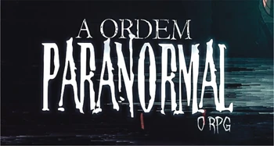
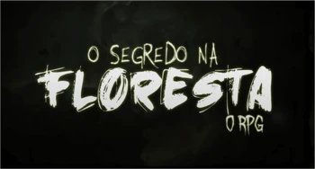
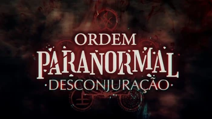
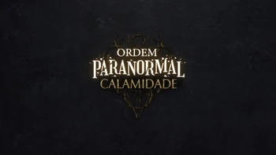
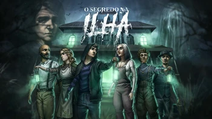
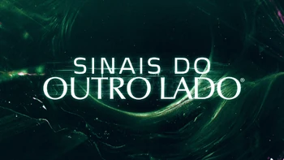
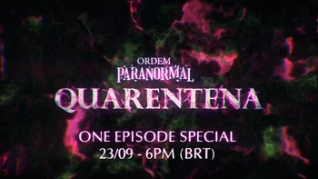

A SERIE
╬╬═════════❮◆❯═════════╬╬
Atualmente, sua ramificação principal são os episódios de RPG de mesa exibidos aos sábados,
às 18 horas, no canal do Cellbit na Twitch. Todas as terças ocorrem as reprises, ao mesmo
horário e também na Twitch, e, às quintas-feiras, o episódio era publicado no canal Lives do
Cellbit no YouTube. Recentemente foi criado o canal Ordem Paranormal.
No início, não havia a intenção de construir um universo fictício com a atual proporção tida
por Ordem Paranormal, mas com quatro amigos e uma pequena equipe de produção, a história foi
criada por Cellbit em torno da primeira campanha do RPG de mesa.
╬╬══════════════════════════❮◆❯═════════════════════════╬╬
AS TEMPORADAS:
Atualmente a serie de ordem paranormal conta com 6 temporadas e 1 spin-off sendo eles mostrados
a seguir:
╬╬═════════❮◆❯═════════╬╬

A Ordem Paranormal
A série "A Ordem Paranormal" se passa em um universo onde existem duas dimensões: o Normal e o
Paranormal. O Normal é onde nós vivemos como humanos, enquanto o Paranormal é um lugar
completamente diferente, onde tudo que parece impossível pode se tornar real, o que normalmente
estaria associado a espíritos, demônios, entre outros tipos de anormalidades ligadas ao pós
vida,
Os dois episódios da campanha foram lançados no dia 29 de fevereiro e 7 de março de 2020 na
Twitch. A série pode ser encontrada também no YouTube.
╬╬═════════❮◆❯═════════╬╬

O Segredo na Floresta
ONo dia 11 de abril, por volta das dez horas da manhã, uma Equipe da Ordem da Realidade (nessa
época chamada de "Ordem da Verdade") tem uma reunião marcada com o homem conhecido como Senhor
Veríssimo na grande torre comercial Alfa, na avenida Faria Lima, em São Paulo. O primeiro a
chegar é Joui Jouki, que após procurar pela sala de reunião indicada por Senhor Veríssimo, se
encontra com os outros membros de sua equipe: Cristopher Cohen, Cesar Oliveira, Thiago Fritz e
Elizabeth Webber.
A série era jogada ao vivo na Twitch, e durou de 11 de abril a 25 de julho de 2020,
compreendendo 16 episódios de, em média, 4 a 3 horas cada. Os episódios podem ser encontrados
também no Youtube, no canal Lives do Cellbit.
╬╬═════════❮◆❯═════════╬╬

Desconjuração
O Santo Berço foi destruído. A reestruturada Ordo Realitas agora opera em uma base subterrânea
na cidade de São Paulo. De lá, o homem conhecido como Senhor Veríssimo comanda uma legião de
agentes que, com auxílio de métodos mais intensos, busca salvar o mundo da ameaça crescente do
ocultismo.
A temporada teve um total de 20 episódios, transmitidos às 18 horas de todo sábado na Twitch do
Cellbit. Todos os episódios também estão disponíveis no YouTube, no canal Lives do Cellbit.
╬╬═════════❮◆❯═════════╬╬

Calamidade
Dez meses se passaram após o retorno de Kian. Nenhum sinal de qualquer interferência no
equilíbrio. Mas uma nova pista faz a Ordo Realitas começar a agir novamente. Um antigo caso de
Arnaldo Fritz, relatando sobre uma entidade descrita como "O Diabo", reúne uma nova equipe de
agentes, composta pelo pequeno e inteligente Rubens Naluti, o agente ex-aposentado Antônio
Pontevedra, a promissora Carina Leone, filha do líder de uma máfia italiana de agentes
paranormais, e os veteranos Arthur Cervero e Dante. Juntos, eles devem pesquisar mais a fundo
sobre o caso enquanto continuam a busca pelo poder das Relíquias da Calamidade.
A campanha foi anunciada previamente no último episódio de Desconjuração, mas foi anunciada
oficialmente após o ARG de Calamidade no dia 29 de agosto de 2021. De acordo com o vídeo de
anúncio, essa é a primeira temporada de RPG do universo feita presencialmente.
╬╬═════════❮◆❯═════════╬╬

SEGREDO NA ILHA
Em uma ilha isolada, há uma enorme mansão, construída por um pintor que desapareceu
misteriosamente há mais de 20 anos. Um avaliador de artes é contratado para passar alguns dias
dentro dessa mansão, à procura de pinturas valiosas dentro dela. Para isso, ele decide levar a
sua família na viagem. Afinal, o que poderia dar de errado?
A campanha foi anunciada no dia 18 de junho de 2022 durante um evento especial na Twitch do
Cellbit, como um dos quatro segredos que foram revelados. O Segredo na Ilha foi uma das três
campanhas spin-offs anunciadas, tendo história e personagens diferentes da história principal de
Ordem Paranormal. Como diferencial, nessa campanha, cada episódio equivaleu a um dia inteiro
na história.
╬╬═════════❮◆❯═════════╬╬

Sinais do Outro Lado
Cinco pessoas, buscando ganhar um dinheiro rápido fazendo um teste científico de uma nova
medicina, vão até os escritórios de uma empresa multinacional, chamada Indústrias Panacea. Só
que, talvez as verdadeiras intenções dessa organização não sejam tão claras assim quando você
observa do outro lado.
A campanha foi anunciada no dia 20 de agosto de 2022, ao final de Revelando o Segredo na Ilha na
Twitch do Cellbit, tendo sua data anunciada em 22 de outubro de 2022. Essa foi a segunda
campanha spin-off das três anunciadas, tendo história e personagens diferentes da história
principal de Ordem Paranormal.
╬╬═════════❮◆❯═════════╬╬
